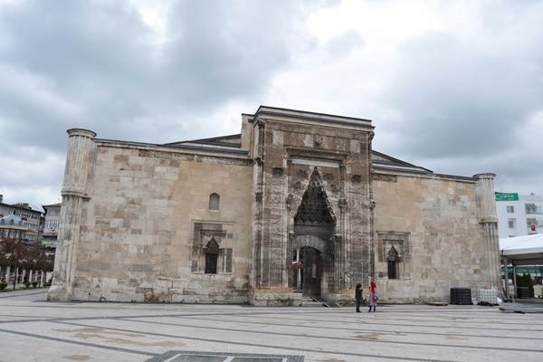
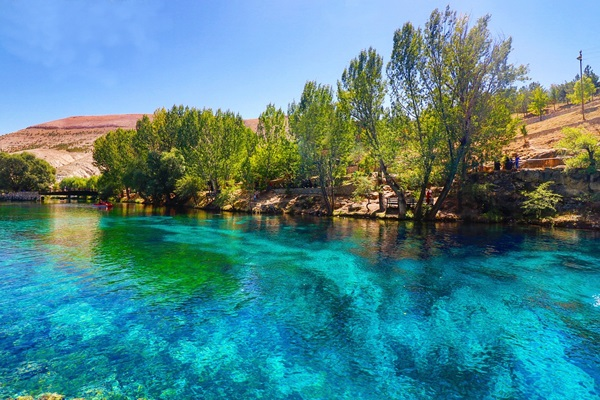
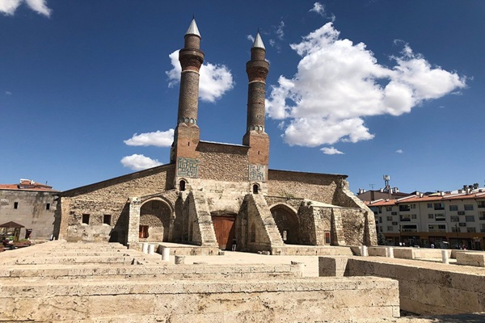
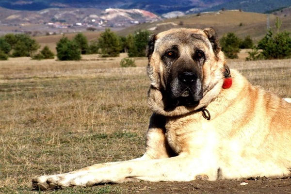
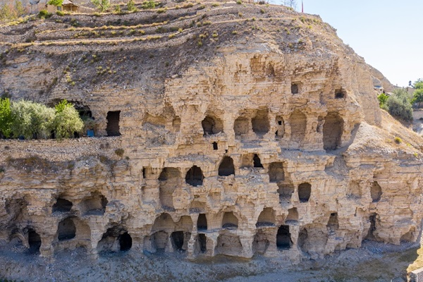

Eski adı (Latince: Sebastea, Grekçe: Σεβάστεια, Ermenice: Սեբաստիա) Sebastia, Sebasteia veya Samassia
olan Sivas, Anadolu'nun en eski yerleşim merkezlerinden biridir. Kazı ve araştırmalarda ele geçen
buluntular, yörede ilk yerleşimin Cilalı Taş Devri'ne (M.Ö. 8000-5500) uzandığını göstermektedir.
Kent, M.Ö. 2000'lerde değişik yerleşmelere sahne olmuştur. Kaynaklarda geçen yazılı tarihi M.Ö. 2000 yılı
başlarında Hititler'le başlamakta olup merkez Tatlıcak köyü ile Uzuntepe köyündeki höyükler, Divriği
ilçesine bağlı Maltepe köyünde bulunan höyük ve Gürün ilçesi sınırlarındaki Şuğul vadisindeki Hititçe
yazılar başlıca Hitit yerleşim alanlarıdır.Maltepe Höyüğü kazıları, yörede ilk yerleşmenin
M.Ö. 2600'lerde başlayıp M.Ö. 2000'lere kadar kesintisiz sürdüğünü göstermektedir.Coğrafya olarak
İç Anadolu'da bulunmasına rağmen Şebinkarahisar'ın 1933 yılına kadar kazaları olan Suşehri, Akıncılar,
Gölova ve Koyulhisar ilçeleri Doğu Karadeniz Bölgesi'nin kültürel hinterlandında yer almaktadır.
Sivas'ın ilçelerini Karadeniz'deki Suşehri ovasına Geminbeli Geçidi bağlar. Divriği ve Gürün ilçeleri de
Doğu Anadolu Bölgesi'nde yer alırken, Doğanşar ile Zara'nın kuzeyi de Karadeniz Bölgesi'nde yer alır.
Sivas topraklarında İç Anadolu, Doğu Karadeniz ve Doğu Anadolu bölgelerinin kültürleri de yer alır.
Sivas merkez ve çevre ilçelerinde gırnata, zurna ile Sivas'a özgü halk oyunları oynanırken,
Karadeniz'deki ilçelerinde kemençe ve zurna ile horonlar oynanır. Divriği ve Gürün yöresi Doğu Anadolu
kültüründe yer alır. İç Anadolu bölgesindeki ilçeleri ise kültür olarak Sivas merkez bölgesinin kültür ve
şivesine sahipken, Karadeniz'de kalan ilçeler büyük ölçüde Giresun ve Ordu ile aynı şiveyi kullanırlar.

BURUCİYE MEDRESESİ
Sarımtırak renkli taşların oyma olarak yapılan giriş kapısı ve avlu karşısındaki iç cephe,
devrin Selçuklu taş oymacılığının en güzel örneklerindendir. Yapı kareye yakın dikdörtgen planlı
olup,
üzeri açık avlu etrafındaki sütunlu revaklar ve bunların gerisinde bulunan hücrelerden oluşmaktadır.
Giriş kapısının sol yanında mavi ve siyah çinilerle süslü türbede medrese binasını yaptıran
Burucerdioğlu
Muzaffer Beyin (Hacı Mes'ud) ve çocuklarının kabirleri yer alır. Türbenin yanında da iki beşik
tonozlu küçük
oda bulunmaktadır. Revakların arkasında medrese odaları, ana eyvanın yanlarında da iki kubbeli oda
vardır.
Vakfiyesinden binada bir de kütüphane bulunduğu anlaşılmaktadır.Taş işlemeciliğinde ağırlığın taç
kapıda
yer aldığı görülür. Yıldız, rumi ve geometrik motifler yüzeysel ancak bir dantel gibi işlenmiştir.
Medrese 1965-1966'da tamir edilmiş ve müze haline getirilmiştir. Sonraki yıllar yine birçok kez
tamir ve
bakım görmüştür.

GÖKPINAR GÖLÜ
Gökpınar Gölü, Sıvas'ın Gürün ilçe merkezine 10 kilometre mesafede bulunan, alüvyon birikimi
sonucu uzun yıllar içerisinde oluşmuş bir göldür. Gölünün alanı 3000 metrekare olup,
1500 ile 2000 rakım arasında bulunmaktadır. Derinliği ise 15 metredir. Gölün rengi gökyüzü mavisi
renginden olduğu için Gökpınar adı verilmiştir.Gökpınar Gölü, 9 Mart'ta Çevre ve Şehircilik
Bakanlığı Tabiat Varlıklarını Koruma Genel Müdürlüğünce "Doğal Sit Nitelikli Doğal Koruma Alanı"
olarak ilan edilmiştir.

ÇİFTE MİNARELİ MEDRESE
Çifte Minareli Medrese, Türkiye'nin Sivas ilinin merkezinde yer alan medrese.
Taç kapı üzerinde yer alan kitabesine göre 1271 yılında İlhanlılar Veziri Şemseddin Cüveyni tarafından
yaptırılmıştır.Medrese, süslemeli taç kapısı ve tuğla-çini örgülü iki minaresi ile dikkati
çekmektedir. Medresenin kapalı mekânı yok olmuş, sadece doğu yönündeki minarelerin bulunduğu asıl cephe
yüzeyi ayakta kalmıştır.Şifaiye Medresesi'nin tam karşısında yer almaktadır.

SİVAS KANGALI
Kangal ilçesine de adını verdiği düşünülen, Orta Asya'dan göç eden Kanglı (Kangar) Türk boyunun,
göç ederken bu köpek ırkını da getirdiği düşünülür. Orhan Yılmaz, "Kangal Köpeği /
Tarihi-Tanıtımı-Yetiştirilmesi-Islahı" adlı kitabında “Kanglı” Türk boyunun Orta Asya'dan
göç ederken yanlarında üç şeyi getirdikleri; bunların at, it ve koyun olduğunu söyler.
11 Temmuz 2003'te düzenlenen I. Uluslararası Kangal Köpeği Sempozyumu'nun sonuç bildirisinde,
“büyük Türk göçleri sırasında Türkistan'dan Anadolu'ya getirilen bir köpek ırkı olduğu”
kabul edilmiştir.

HİTİT MAĞARALARI
Sivas'ın Gürün ilçesinde, milattan önce 2 binli yıllarda Hititler'in yaptığı,
tarih boyu barınak, sığınak, kale ve yiyecek saklamak için kullanılan mağaralar,
3 ve 5 katlı ilkel bir apartman görüntüsünü andırıyor.
Dağ yamacında yan yana ve alt alta sıralanan, tarih boyu barınak, sığınak, kale
ve yiyecek saklamak için kullanılan mağaralar 3 ve 5 katlı ilkel bir apartman
görüntüsünü andırıyor. Kayaçların kolay aşınabilmesi özelliği nedeniyle Hititlerin
bu mağaraları işleyerek katlı yapı görünümüne kavuşturdukları tahmin ediliyor.